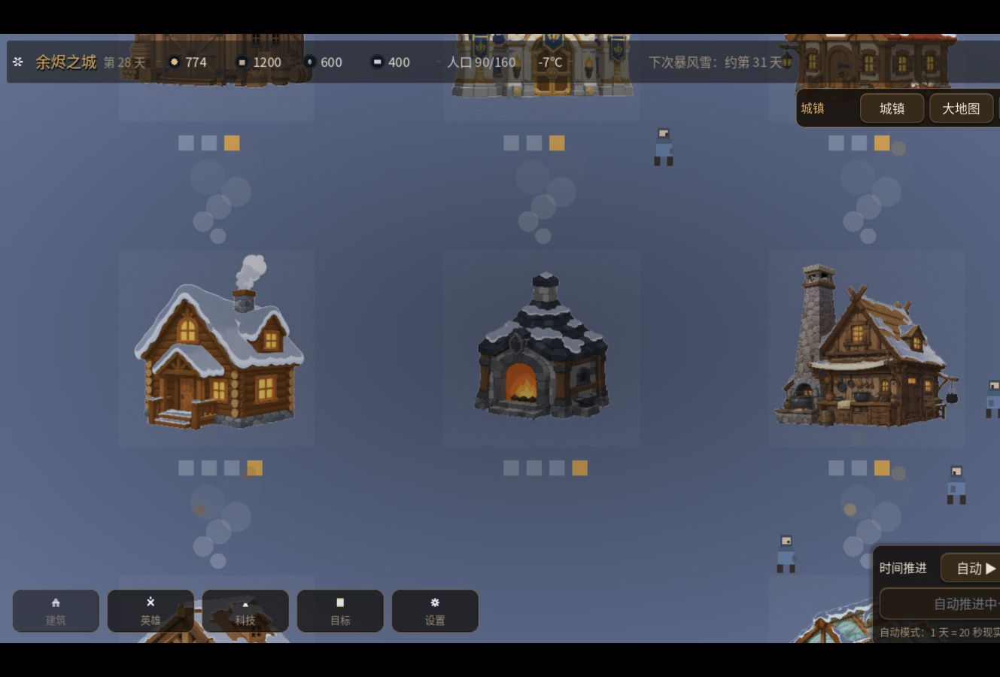

熔炉必须是看得见的生存锚点
城市的安全感不藏在二级菜单里。供暖、煤耗、人口与升级进度都围绕中央熔炉展开，玩家抬眼就能判断这座城离失控还有多远。

06 / Survival City Builder Demo
雪原经营真正难的，不是把资源条做多，而是让每一次缺煤、派人和升级都变成马上要承担的后果。这个 Demo 从第 28 天切入，把城市经营、暴风雪压力、冻原探索和英雄远征接成一段可直接试玩的垂直切片。
城市的安全感不藏在二级菜单里。供暖、煤耗、人口与升级进度都围绕中央熔炉展开，玩家抬眼就能判断这座城离失控还有多远。
下一场暴风雪固定出现在日程上。煤炭、食物和木材于是有了共同的截止时间：今天继续扩建，还是先给第 31 天留出余量？选择从这里成立。
冻原节点给出更高收益，但会占用英雄时间并承担威胁。缺什么资源、派谁出去、是否接受成功率，都是同一套生存压力的不同出口。
招聘者进入后不必先等半小时发展。17 座建筑、6 名英雄、四轮暴风雪记录和 4 级熔炉已经就位，两天内的取舍足以暴露系统是否真的连得起来。
Playable Proof
先看城市是否扛得住，再看地图上有什么补给，最后决定哪名英雄去承担时间与风险。
Day 28 / Near Victory
打开后会直接进入第 28 天：人口 90 / 160，熔炉 4 / 5，下一场暴风雪约在第 31 天。资源已经足够做出选择，但还没有替你完成最后两天。
Runtime Evidence
以下三张画面都来自同一次 Web 构建运行，不是单独制作的展示稿。
Verification / Boundary
测试覆盖四轮暴风雪、资源生产、建筑升级、科技、远征、存档、战斗、联盟和触控拖动，最终抵达第 35 天并升级至 5 级熔炉。
城市、熔炉详情、大地图和英雄远征均已在浏览器中实际打开；中文主界面与关键面板可读。
横屏构建适合桌面体验，手机端通过自适应容器访问并可全屏；场景里的少量装饰文字仍有字体缺字，首屏约 21 MB，首次载入需要等待。